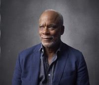

Showtime
17 people whose festival biography mentions Showtime. A mention can mean a job, a past job, a grant, a broadcast or an award: read the bio for which.
 Nina AlvarezPanelist · 3 editions, 2021–2026
Nina AlvarezPanelist · 3 editions, 2021–2026 Matthew HeinemanFilmmaker, panelist · 3 editions, 2015–2022
Matthew HeinemanFilmmaker, panelist · 3 editions, 2015–2022

 Traci A. Curry (co-)Filmmaker, panelist · 2021
Traci A. Curry (co-)Filmmaker, panelist · 2021
- Karim AmerPanelist · 2019
 Miranda Rose HallWorkshop leader · 2023
Miranda Rose HallWorkshop leader · 2023 Emma D. MillerPanelist, filmmaker · 2024
Emma D. MillerPanelist, filmmaker · 2024 JoeBill MuñozFilmmaker, panelist · 2024
JoeBill MuñozFilmmaker, panelist · 2024
Stanley NelsonFilmmaker, panelist · 2021